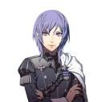
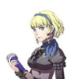
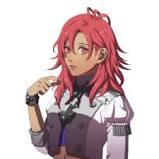

The Ashen Wolves is a group that inhabits Abyss. They claim to be the secret fourth house of the Officers Academy, but there is no official public record of their existence, and they are merely known by those who are also aware of Abyss.
members

Yuri Leclerc - The sharp-tongued but caring leader of the Ashen Wolves.
Balthus von Albrecht - A rowdy man from the Leicester Alliance and the self-proclaimed "King of Grappling".

Constance von Nuvelle - The only known survivor of House Nuvelle, a former noble house of the Adrestian Empire.

Hapi - A disinterested resident of Abyss who attracts monsters whenever she sighs.